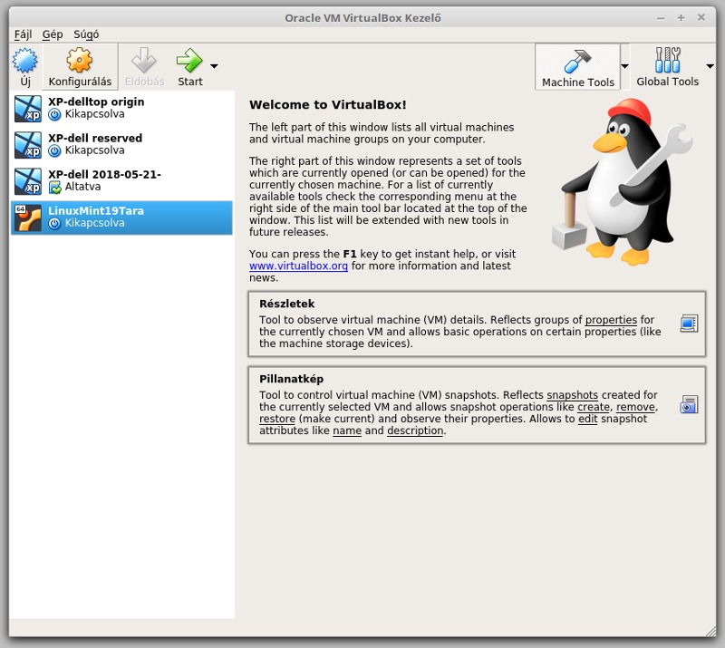
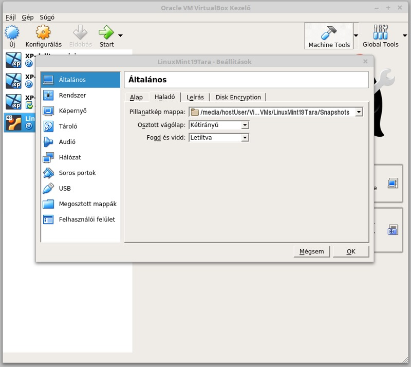
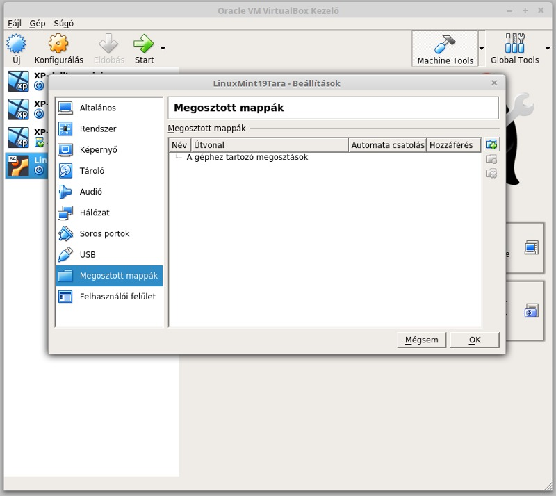
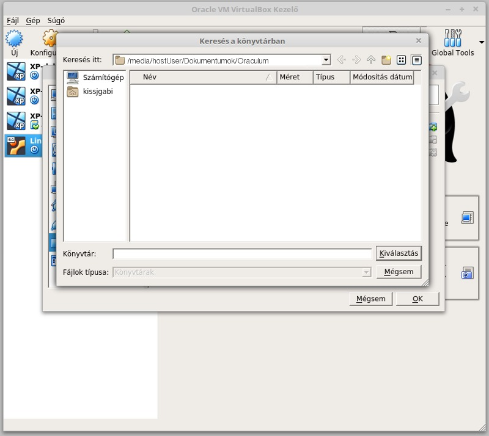
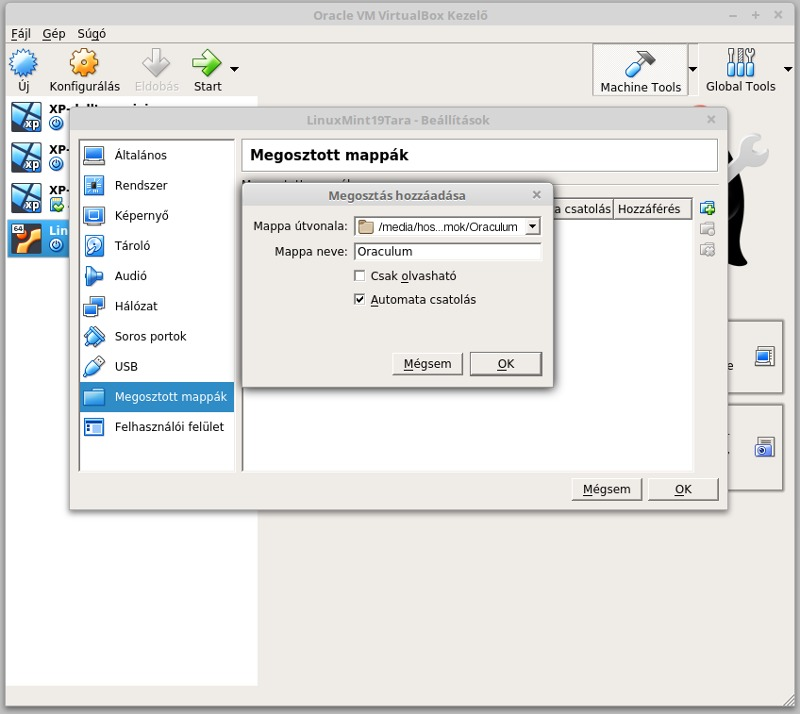
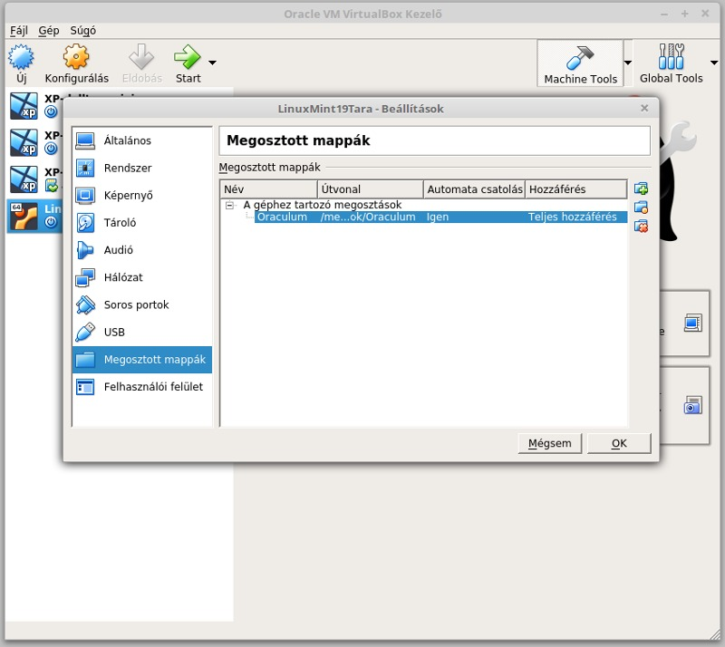
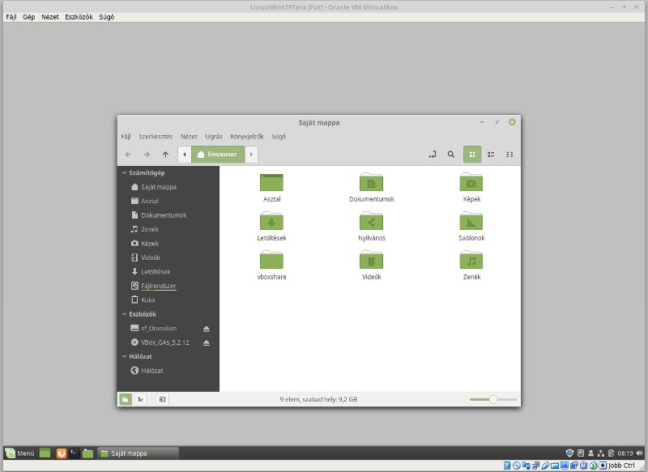
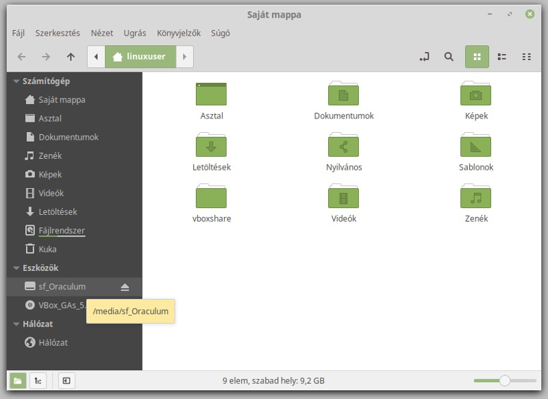

A telepített Linux rendszerünk és a gazdagép operációs rendszere között kényelmes adatmegosztást hozhatunk létre a Virtuálboxban. A ikonra kattintva megnyitjuk a Beállítások ablakot. Az 'Általános' beállítások 'Haladó' fülön megadhatjuk a vágólap beállításokat. A kétirányban osztott vágólap lehetővé teszi a másolás/beillesztés parancsok teljeskörű használatát a gazdagép és a virtuális gép között. Amennyiben használni szeretnénk a "drag & drop" funkciót, akkor azt is beállíthatjuk a 'Fogd és vidd' tulajdonságainál.
 
Telepített Linux rendszerünk hasznos adatait (fájljait) minél egyszerűbben szeretnénk használni a virtuálboxon kívül is. Ezt akkor tehetjük meg, ha a gazdagépen van egy olyan mappánk, melyet a virtuális gépünk is használhat. Legyen ez a 'Dokumentumok' könyvtárban létrehozott 'Oraculum' nevű mappa, amit indításkor külső adattárként csatol a fájlrendszeréhez a Linuxos virtuális gép. Az itt tárolt adatokat azután a gazdagép és a virtuális gép is módosíthatja. A menü 'Megosztott mappák' beállításainál kattintsunk a hozzáadás ikonra.
 
Keressük ki az 'Oraculum' mappát a gazdagép könyvtárában és válasszuk is ki. A 'Megosztás hozzáadása' ablakban pipáljuk ki az 'Automata csatolás' jelölő négyzetét és zzuk le a választásunkat. A géphez tartozó megosztások között meg is jelenik a mappa neve, elérési útja és megosztási tulajdonságai.
 
A Virtuálboxban a "LinuxMint19Tara" indítása után a 'Fájlkezelőben' az 'Eszközök' között találjuk meg 'sf_Oraculum' néven. A gazdagép 'Dokumentumok' mappájában pedig 'Oraculum' néven látjuk.
 